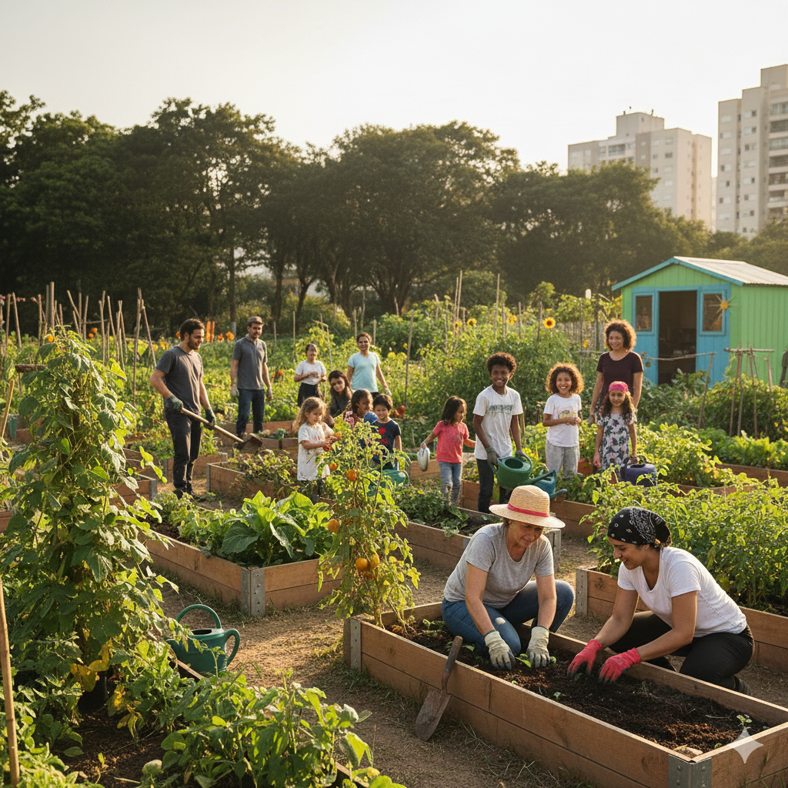

Projeto
"Educação para o Futuro"
Foco na alfabetização e reforço escolar para crianças e adolescentes em comunidades carentes.
Impactando vidas e transformando comunidades.
Conheça as iniciativas que estamos desenvolvendo para construir um futuro mais brilhante.

Foco na alfabetização e reforço escolar para crianças e adolescentes em comunidades carentes.

Oferta de consultas básicas, vacinação e palestras sobre higiene e bem-estar.

Distribuição de alimentos nutritivos e promoção da segurança alimentar.
Este projeto visa combater a evasão escolar e melhorar o desempenho acadêmico de crianças e adolescentes. Oferecemos aulas de reforço, oficinas culturais e acesso a materiais didáticos. Acreditamos que a educação é a chave para quebrar o ciclo da pobreza e abrir portas para um futuro promissor.
Depoimento: "Graças ao Projeto Educação, meus filhos voltaram a sonhar com a faculdade. Sou muito grata!" - Maria S., mãe assistida.
Levamos atendimento médico e odontológico básico, além de campanhas de vacinação e palestras de conscientização sobre saúde e higiene. Nosso objetivo é prevenir doenças e promover hábitos saudáveis nas comunidades que atendemos, garantindo mais qualidade de vida.
Resultados: Mais de 500 atendimentos realizados e 200 palestras ministradas no último ano.
Combatemos a fome e a insegurança alimentar, distribuindo cestas básicas e refeições nutritivas. Além disso, incentivamos hortas comunitárias e o reaproveitamento de alimentos, capacitando as famílias para uma alimentação mais saudável e sustentável.
Sua paixão e tempo são recursos valiosos para a ONG Esperança. Seja para dar aulas, auxiliar em eventos, ajudar na distribuição de alimentos ou em tarefas administrativas, há sempre uma forma de você contribuir.
Temos diferentes modalidades de voluntariado, presenciais e online, adaptadas à sua disponibilidade. Faça a diferença na vida de alguém!
Cada doação, por menor que seja, nos ajuda a manter nossos projetos e expandir nosso alcance. Sua contribuição financeira é fundamental para que possamos continuar oferecendo esperança e oportunidades.
Banco: Banco do Bem (001)
Agência: 1234
Conta Corrente: 56789-0
Nome: ONG Esperança
Transparência total: você pode acompanhar a aplicação dos recursos em nossos relatórios anuais.